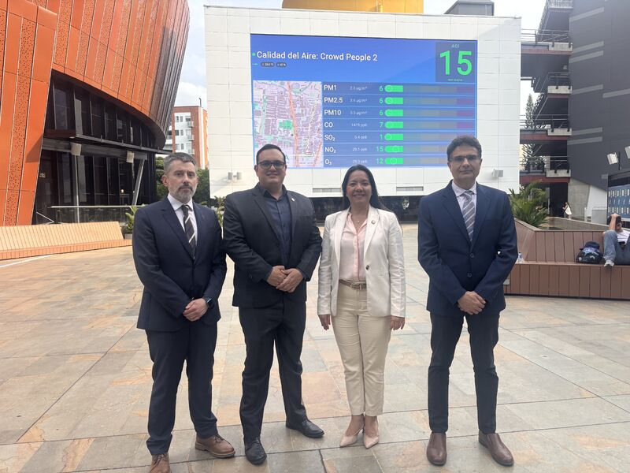
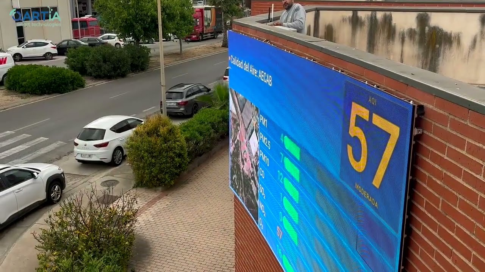
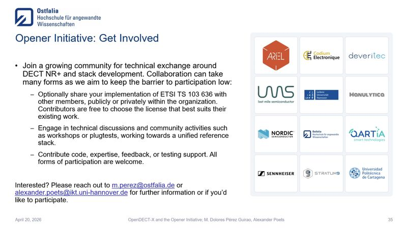
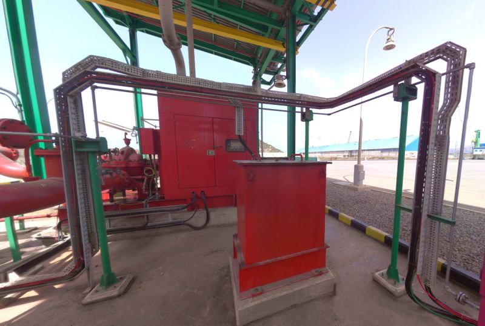
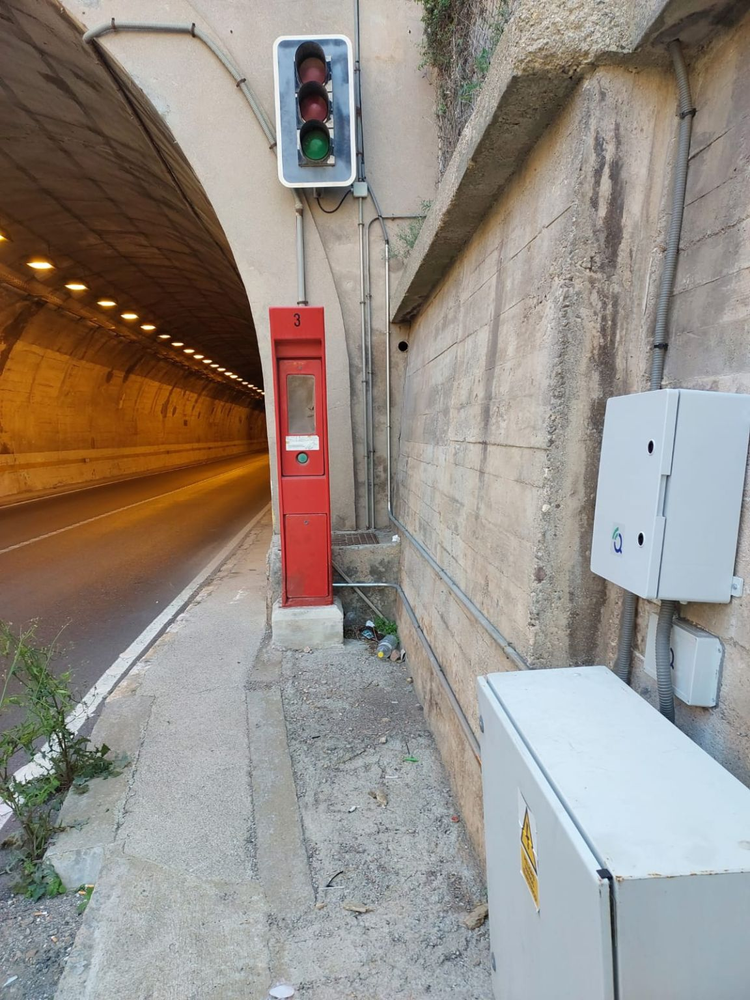
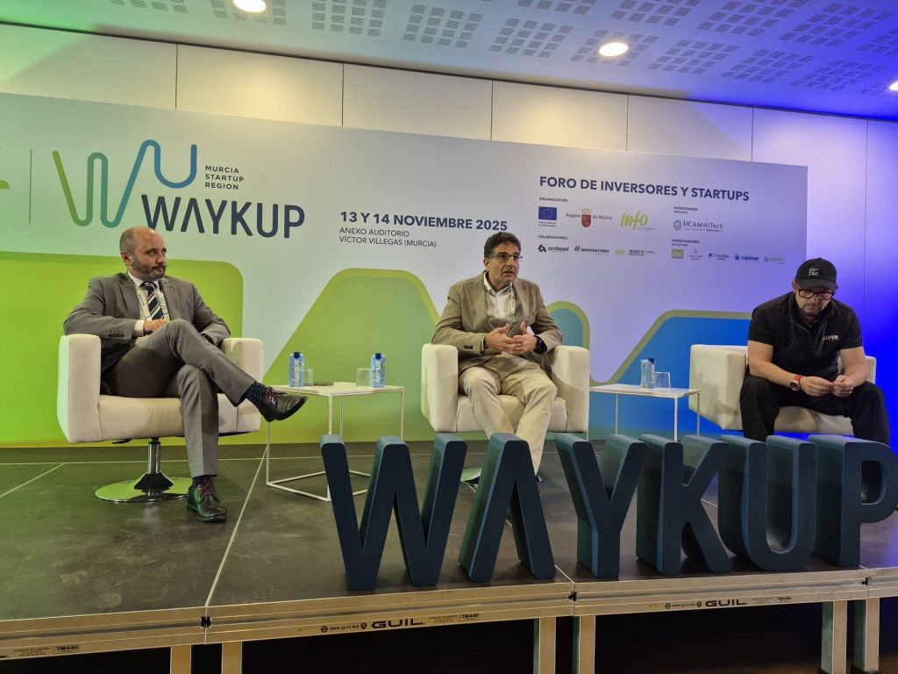
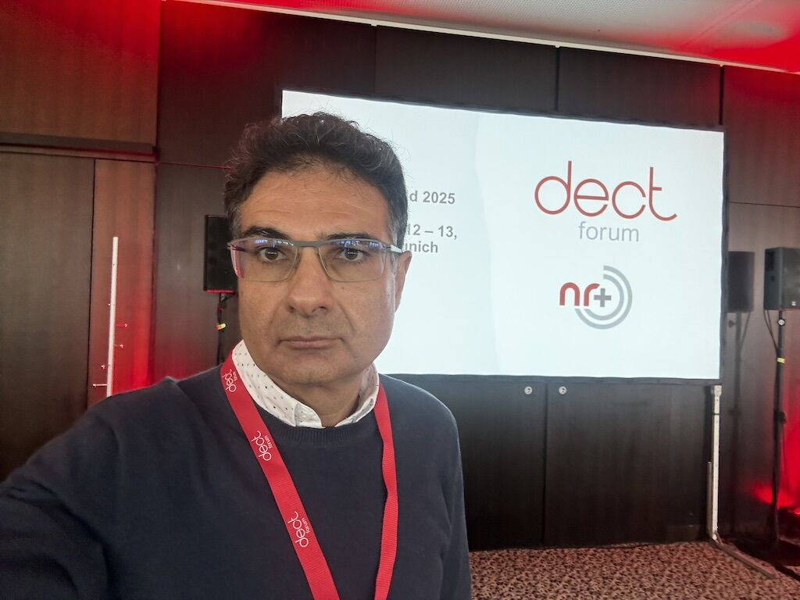
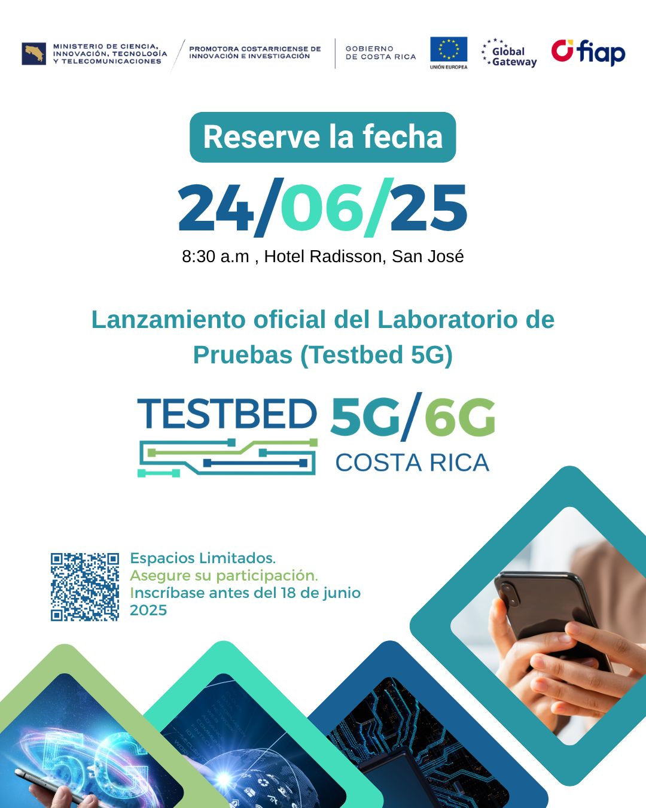
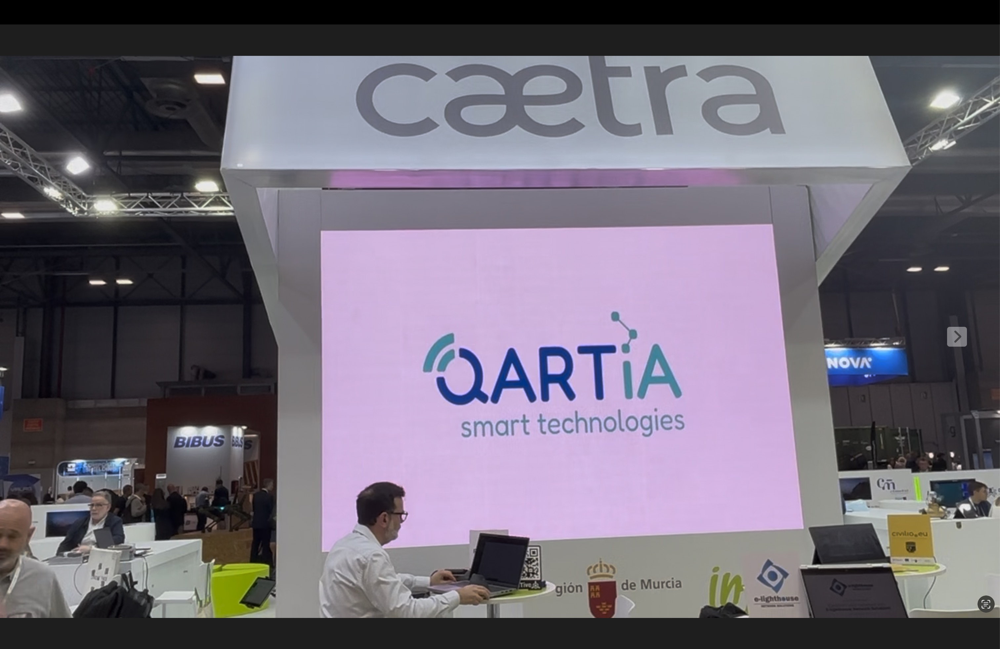

新闻
新闻



5G 私人
2026 年 4 月 21 日
开场白倡议和 DECT NR+
Qartia 参与了与 OpenDECT-X 相关的开放倡议，以促进 DECT NR+ 的共享堆栈、技术交流和社区发展。
查看更多

基础设施
2026 年 1 月 3 日
Cala Cortina 的 MIC 项目
该出版物总结了卡塔赫纳港第二条隧道 N-343 中部署的地震监测和结构监测，以加强 Qartia 的民用线路。
查看更多

生态系统
2025 年 11 月 18 日
Qartia 在 Waykup 论坛 2025
Qartia 总结了他参加穆尔西亚双重创新小组的情况，强调了该地区在吸引深度技术、私人投资和 IoT、5G 非细胞和应用人工智能项目方面的作用。
查看更多
DECT NR+
2025 年 11 月 12 日
Qartia 在 2025 年 DECT 论坛上
Qartia 参加了在慕尼黑举行的 2025 年 DECT 论坛，加强了其用于工业连接的专用网络 DECT NR+、IoT、IP、语音和视频服务。
查看更多
